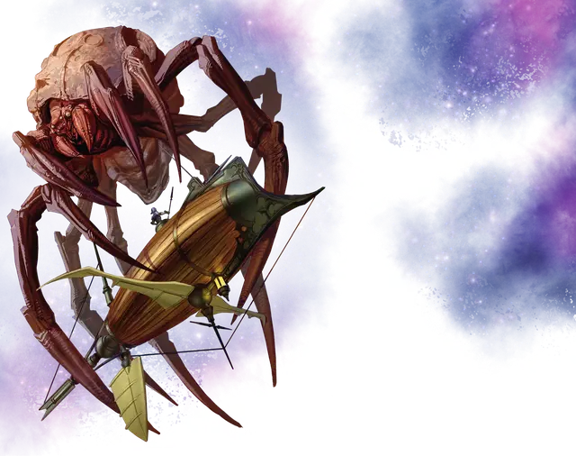

Паук-астероид
Asteroid Spider
Громадный Монстр, нейтрально-злой

Класс Доспеха 17 (природный доспех)
Хиты 348 (24к20 + 96)
Скорость 60 футов, летая 60 футов (парит)
| мод | спас | ||
|---|---|---|---|
| СИЛ | 26 | +8 | +8 |
| ЛОВ | 10 | +0 | +0 |
| ТЕЛ | 18 | +4 | +9 |
| мод | спас | ||
|---|---|---|---|
| ИНТ | 17 | +3 | +3 |
| МДР | 13 | +1 | +6 |
| ХАР | 12 | +1 | +1 |
Навыки Восприятие +11, Скрытность +5
Чувства слепое зрение 120 футов (когда паучьи глаза закрыты), тёмное зрение 120 футов, пассивное Восприятие 21
Опасность 15 (13000 опыта)
Бонус мастерства +5
Особенности
Обманчивая внешность. Если паук неподвижен, его глаза и рот закрыты, а конечности обхватывают тело, то в начале боя имеет преимущество в броске инициативы. Более того, если существо не наблюдало за движением или действием паука, это существо должно преуспеть в проверке Интеллекта (Расследование) Сл 18 для чтобы определить, что это нечто иное, чем астероид.
Легендарное сопротивление (3/день). Если паук проваливает спасбросок, он может вместо этого сделать спасбросок успешным.
Необычная природа. Паук не нуждается в воздухе.
Действия
Мультиатака. Паук совершает две атаки Паутиной, использует Притягивание и совершает две атаки Укусом.
Укус. . Рукопашная атака оружием: +13 к попаданию, досягаемость 10 фт., одна цель. Попадание: 21 (3к8 + 8) колющего урона плюс 10 (3к6) урона кислотой.
Нить паутины. . Дальнобойная атака оружием: +13 к попаданию, досягаемость 120 фт., одно существо. Попадание: Цель становится схваченной (Сл высвобождения 18). Нитям паутины можно нанести урон и уничтожить её (КД 12, 20 хитов, уязвимость к урону огнём, иммунитет к дробящему урону, урону психической энергией и ядом). Паук может схватить до шести существ одновременно с помощью нитей паутины.
Притягивание. Паук подтягивает каждое схваченное им существо на расстояние до 60 фт. по прямой к себе.
Бонусные действия
Силки для корабля (1/день). Паук сплетает магическую паутину вокруг магического корабля, который он может видеть в пределах 120 футов. Паутина существует 1 минуту и подавляет действие магического руля, расположенного на корабле. Палубы и другие внешние поверхности корабля, становятся труднопроходимой местностью пока эффект не оканчивается. Паутина невосприимчива к урону, но её можно уничтожить успешным наложением заклинания рассеивание магии [dispel magic] Сл 18.
Описание
Паук-астероид является привычной угрозой в Диком космосе и Астральном море. Диаметр тела взрослого экземпляра составляет 30 футов, а длина ног — не менее 30 футов. Когда паук-астероид плотно прижимает ноги к своему телу и закрывает глаза, то становится похожим на громадный безжизненный камень, плывущий в космосе. Отсюда его название.
У паука-астероида есть собственная гравитационная плоскость и воздушная оболочка, а с помощью многочисленных прядильных органов он может создавать нити паутины. Живой мозг паука функционирует подобно магическому рулю, что позволяет ему путешествовать по Дикому космосу без корабля. Обычно он обитает в астероидных поясах, скрываясь среди других небесных тел, пока не обнаружит магический корабль, подошедший достаточно близко к нему. Тогда паук ловит корабль в силки, и с помощью нитей паутины хватает членов команды и подтаскивает их к своим щелкающим челюстям.